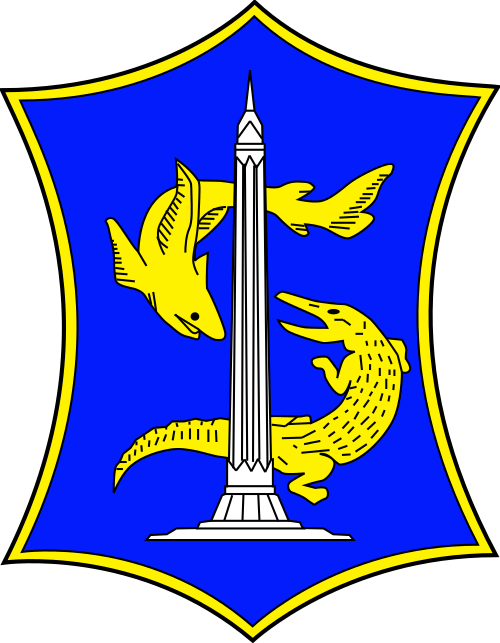

Kelurahan Tanjungsari
Daftar UMKM Kelurahan Tanjungsari
Temukan produk dan jasa terbaik dari para wirausahawan lokal.
Kategori
Semua Kategori
Semua Kategori
Kuliner
Jasa
Toko Kelontong & Peralatan
Lainnya
Filter berdasarkan RW
Tidak ada UMKM yang ditemukan.